E nós decidimos ajudar a acender a luz.
Conheça a Beatriz
Beatriz é uma microempreendedora apaixonada pelo que faz. Dona de um salão de beleza, ela construiu seu negócio com dedicação e talento — mas enfrentava um desafio invisível.
Sem ferramentas adequadas de gestão, Beatriz não tinha visão real do seu próprio negócio. Não sabia exatamente quantos clientes atendia por mês, qual era seu ticket médio, quais serviços geravam mais receita, ou como estava seu fluxo financeiro.
Era como liderar no escuro. Andar sem saber para onde. E a nossa missão era mudar isso.
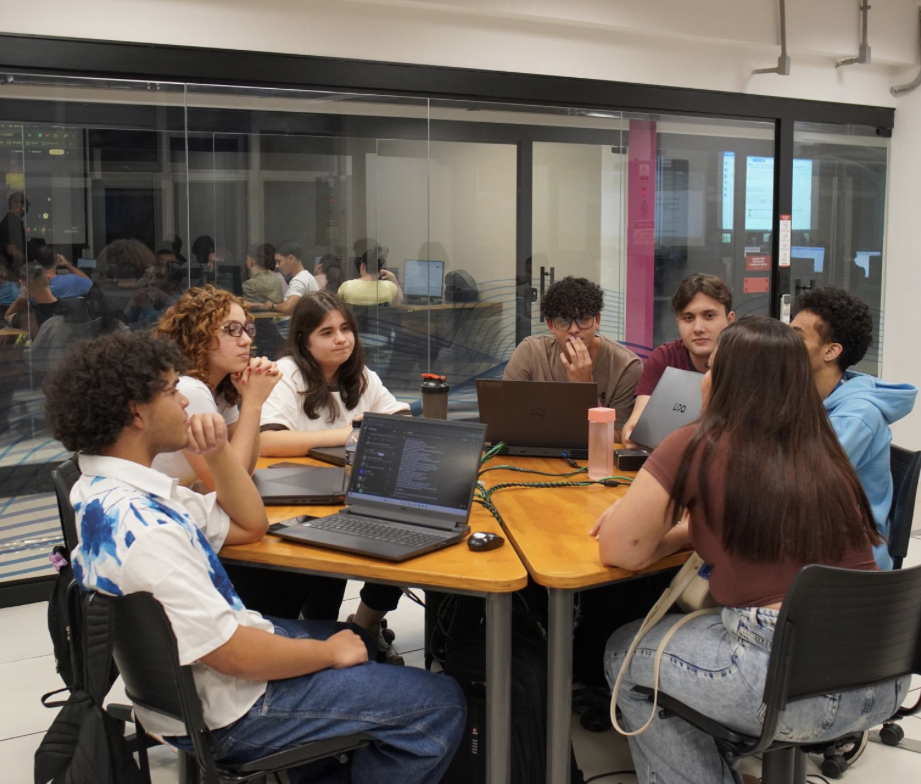
A conversa que mudou tudo
Nos reunimos com a Beatriz para entender de perto a realidade dela. Ouvimos suas dores, seus desafios do dia a dia e como ela gerenciava tudo sozinha — na agenda de papel, no caderno, na memória.
Foi nessa conversa que nasceu a ideia do BeautyFlow: um sistema feito sob medida para dar a ela a visão completa do seu negócio, de forma simples e acessível.
Cada funcionalidade que criamos veio direto das necessidades reais que a Beatriz compartilhou com a gente nesse encontro.
Nossa missão vai além de dar visão.
Queremos ajudar a alavancar o negócio dela.
Visão Financeira
Controle de receita, despesas e lucro em tempo real.
Visão dos Clientes
Quem são, quando voltam e quanto gastam.
Visão de Metas
Definir e acompanhar metas mensais de faturamento.
Conheça o BeautyFlow
Um CRM completo de gestão, desenvolvido especialmente para dar visão e controle ao negócio da Beatriz. Cada funcionalidade foi pensada para resolver um problema real.
Fluxo Completo com Padrão GS1
Usando o Padrão GS1 com os identificadores GSRN (Número Global de Relação de Serviços) e GLN (Número Global de Localização), criamos QR Codes que vão além de somente identificar produtos, podendo conectar o salão da Beatriz a uma experiência digital completa para seus clientes.
Gestão de Estoque
Código de Barras EAN-13 · QR Code GS1 · GTINA empreendedora compra produtos para o salão. Ao receber a mercadoria, ela utiliza o scanner integrado ao BeautyFlow para registrar automaticamente os itens no estoque.
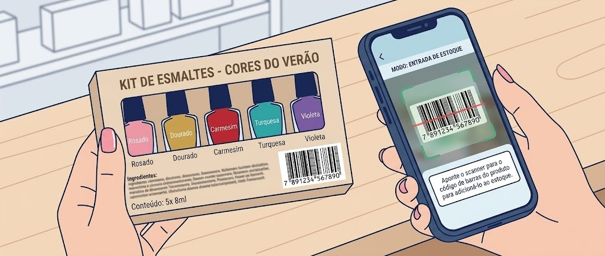
Código de Barras (EAN-13 / QR Code GS1)Bipe o código na embalagem do produto para dar baixa automática no sistema.
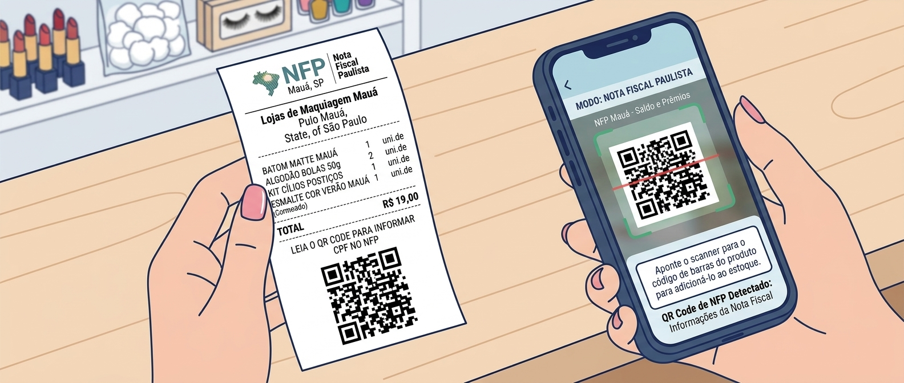
QR Code de Nota FiscalEscaneie o QR Code da NF-e para entrada automática padronizada via GTIN.
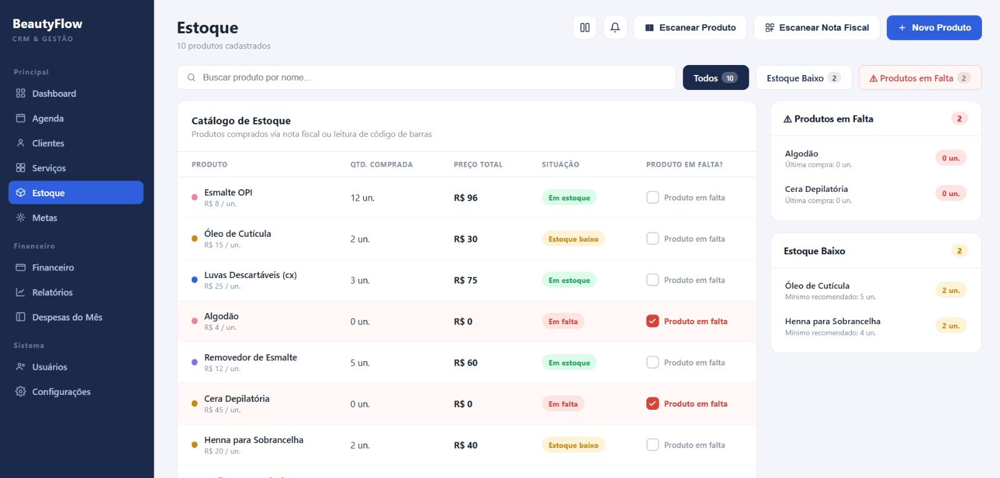
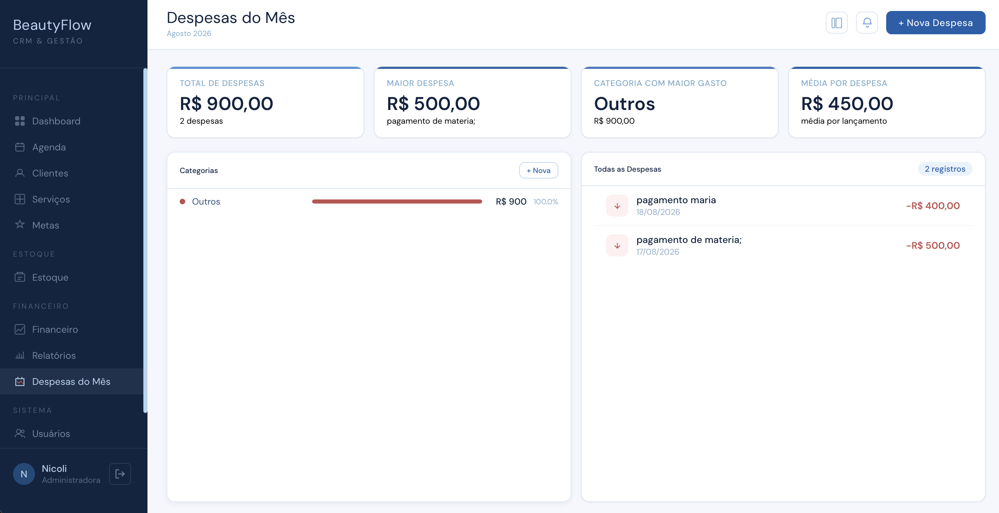
Agendamento via QR Code
QR Code Padrão GS1 · GSRNO cliente acessa o QR Code do salão — em redes sociais, cartão de visita ou WhatsApp — e agenda seu serviço de forma autônoma.
O cliente escolhe o serviço, dia e hora — tudo pelo celular, sem precisar ligar.
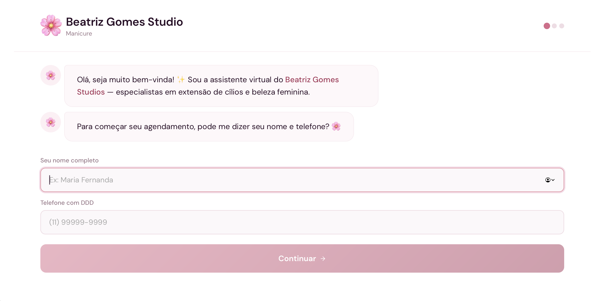
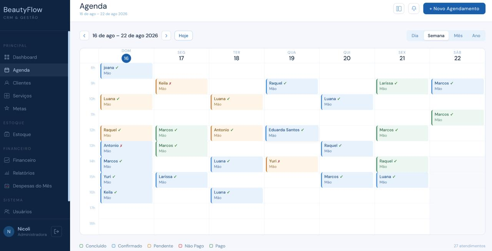
Confirmação de Serviço Prestado
QR Code Padrão GS1 · GSRNApós o serviço ser prestado, o QR Code que o cliente recebeu durante o agendamento via WhatsApp é exibido para o atendente. Ao escanear, o sistema registra automaticamente que o serviço foi concluído.
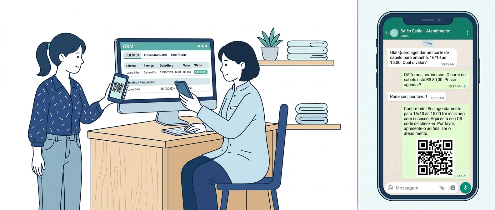
QR Code de ConfirmaçãoO atendente escaneia o QR Code do cliente para confirmar que o serviço foi prestado.
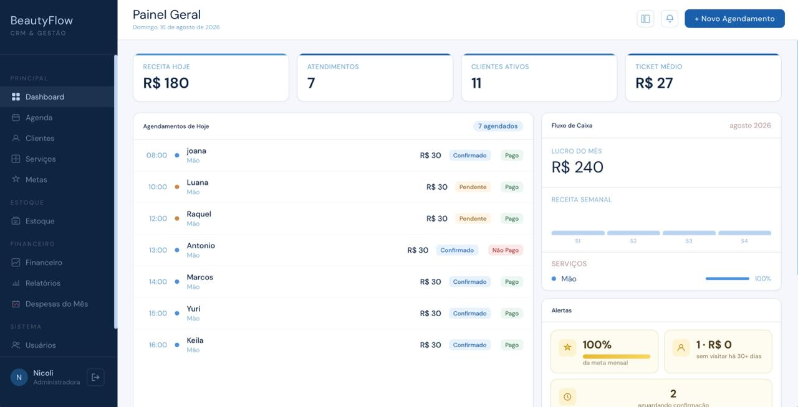
Avaliação do Serviço
QR Code Padrão GS1 · GSRNDepois do serviço prestado, o cliente escaneia o QR Code para avaliar a experiência. Essa avaliação alimenta os relatórios de qualidade, permitindo que o salão mantenha seu padrão de excelência.
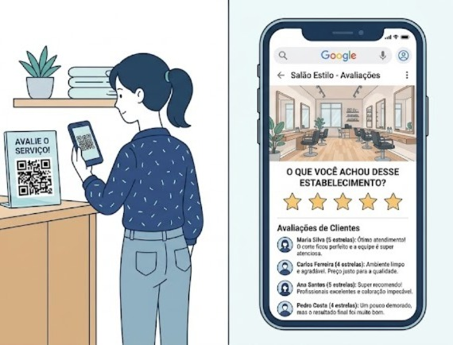
QR Code de AvaliaçãoFeedback instantâneo e sem atrito — o cliente avalia direto pelo celular.
Análise e Inteligência de Dados
Dados gerados pelas soluções GS1Todos os dados gerados ao longo do fluxo — compras de produtos, agendamentos, serviços prestados, avaliações — alimentam as abas de análise do BeautyFlow, dando à Beatriz a visão completa do seu negócio.
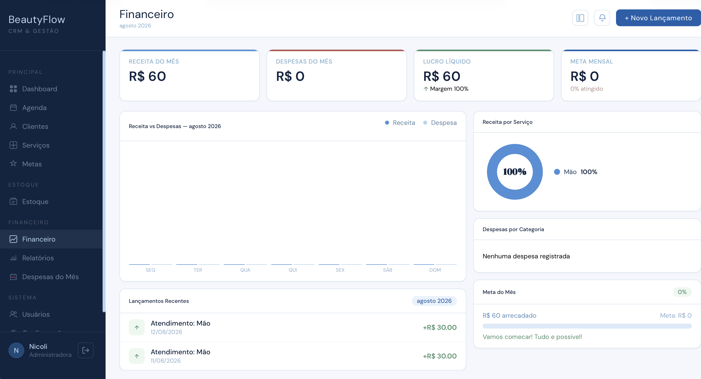
Financeiro
Receita, despesas, lucro líquido e gráficos de desempenho mensal.
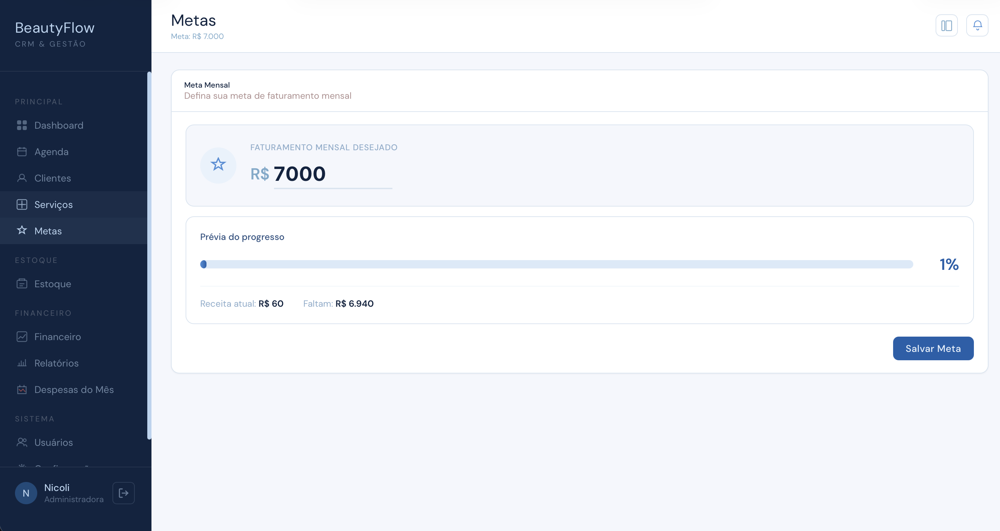
Metas
Defina metas de faturamento e acompanhe o progresso em tempo real.
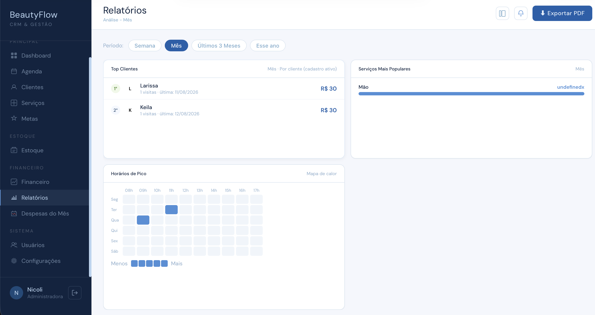
Relatórios
Top clientes, serviços populares e mapa de calor de horários.